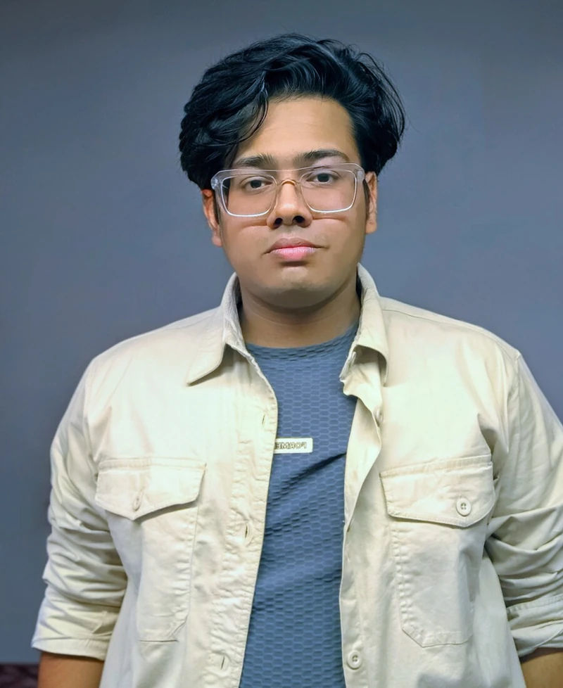

Learning where it counts: alongside engineers, around real
machines, solving practical problems.
Robotics. Manufacturing. A little more hands-on every
day.
MAY — JUN 2026INTERNSHIP
Tata Steel
Engineering Intern
Automation of DS material unloading from tanker.
Explored a safety-focused automation concept to reduce manual
hose handling.
Connected mechanical design, robotic handling, and industrial
sensing to a real material-unloading workflow.
SEP 2024 — MAR 2025INTERNSHIP
COTMAV Robotics & Automation
Junior Project Engineer Intern
Supported FANUC robot installation, mechanical setup, testing,
and commissioning.
Contributed to robotic welding and spray-painting automation
applications in manufacturing environments.
FANUCROBOT INTEGRATIONCOMMISSIONING

+
KSHITIZ RAYENGINEER IN THE MAKING
STAY CURIOUS.
BASED IN INDIA · BUILDING WITH
PURPOSE
03 / A LITTLE ABOUT ME
An engineer’s mindset. A maker’s
curiosity.
I’m a B.Tech Mechatronics student at
KIIT University, Bhubaneswar, with a hands-on
diploma from NTTF, Jamshedpur. I like understanding how things
work—and figuring out how to make them work better.
My sweet spot is where mechanical design, electronics, and
programming meet. From CAD models to industrial robots, I’m drawn
to practical engineering, thoughtful design, and the next thing I
can build.
B.Tech · Mechatronics Engineering
KIIT University, Bhubaneswar
2025 — PRESENT
Diploma · Mechatronics Engineering
NTTF R.D. Tata Technical Education Centre CGPA 7.82